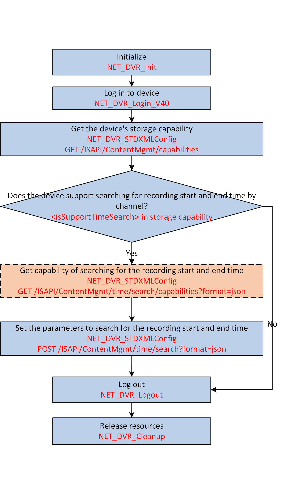

You can check whether the channel has recorded videos and get the
recording start and end time.

Figure 1 API Calling Flow of
Searching for Recording Start and End Time by Channel
-
Call NET_DVR_STDXMLConfig to transmit the request URI: GET
/ISAPI/ContentMgmt/capabilities for getting the device's storage capability to check whether it supports
searching for recording start and end time.
The device's storage capability is returned by the output
parameter pointer lpOutputParam in the
message XML_RacmCap.
If the node <isSupportTimeSearch> is returned in the message and its
value is "true", it indicates that searching for recording start and end
time is supported and you can continue to perform the following steps.
- Optional:
Call NET_DVR_STDXMLConfig to transmit the request URI: GET
/ISAPI/ContentMgmt/time/search/capabilities?format=json for getting the capability of searching for the recording start and end time
for reference.
-
Call NET_DVR_STDXMLConfig to transmit the request URI: POST
/ISAPI/ContentMgmt/time/search?format=json to set the parameters to search for the recording start and end time.
Call NET_DVR_Logout and NET_DVR_Cleanup to log out off the device and release the resources.